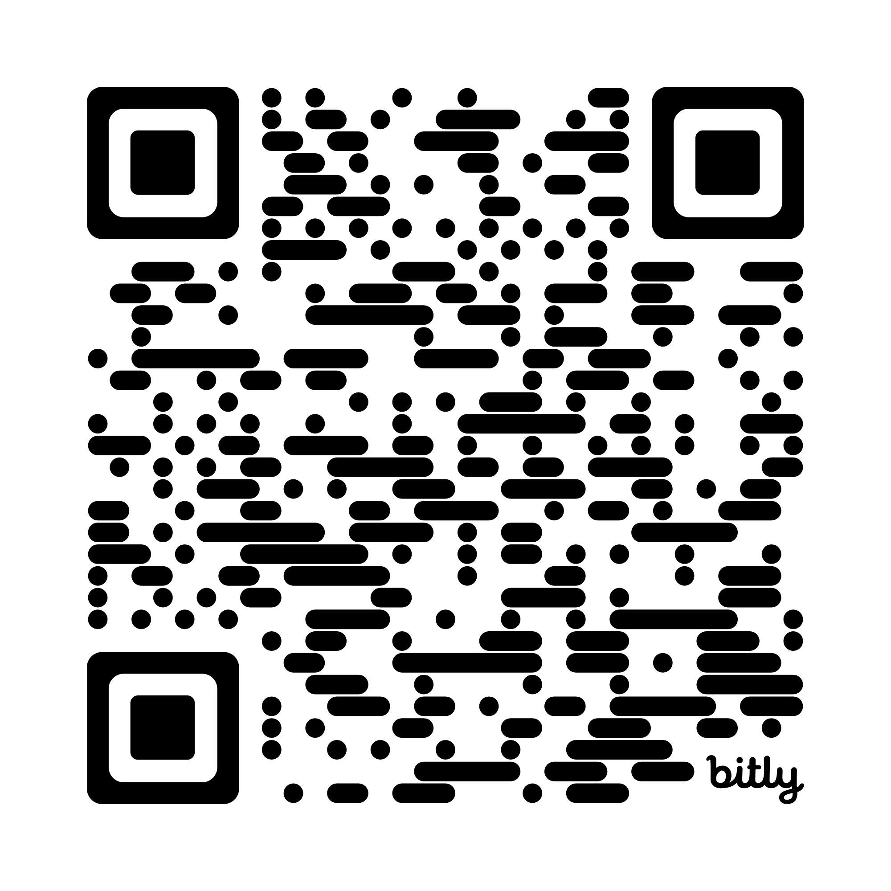

bit.ly/49Y5GEuEach transition is a cognitive event, not just a technological one. Each stage brings capacities the prior lacked and erodes capacities the prior sustained.
The stages overlap rather than replace one another. The dates mark when each condition became dominant, not a clean succession. The threshold marks a change in what is structurally possible: symbolic content can now originate algorithmically at scale.
Click each assumption to see what generative AI breaks.
Click a characteristic to see a concrete rupture in doctoral work.
The artifact is present. The cognitive development that produced it is not. The product looks like the product of understanding.
Every doctoral scholar in this room makes a thousand small decisions a week about where to invite AI into their scholarship. The literature review you are drafting tonight. The committee feedback you have to address by Friday. The chapter you have rewritten six times. The question the framework asks of K-12 is the same question it asks of you:
When you delegate the interpretive labor, what happens to the thinker who would otherwise have done it?
An argument for preserving friction can become an argument for preserving inequity if it does not ask whose work a given difficulty supports.
The same tool can do both at the same time. Distinguishing them requires situated judgment.
In groups of three, place each case on the line between productive friction and exclusionary friction. There is no answer key. Click a case to reveal why the room splits, but only after your group has committed to a position.
Report out: name the case your group split on, and the dimension that made it hard.
Each scenario is something a doctoral scholar in this room is doing this week. Pick one. Discuss in groups of three.
Including yours.
Use this one-page diagnostic on a chapter, article, methods section, or assignment you are designing.